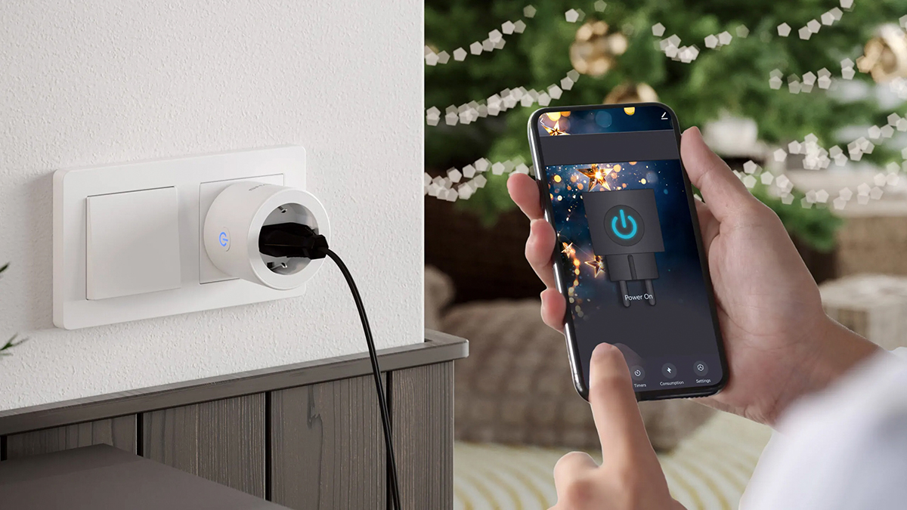

SHARE
As energy costs continue to rise, more homeowners are looking for simple ways to reduce electricity usage without sacrificing comfort or convenience. One of the easiest and most affordable upgrades you can make is adding smart plugs to your home.
Smart plugs may look small, but they can have a big impact on energy efficiency, automation, and everyday convenience. Whether you’re building a full smart home or just getting started, these devices offer an easy way to take better control of your energy usage.
What Is a Smart Plug?
A smart plug is a device that plugs into a standard electrical outlet and allows you to control connected electronics remotely through a smartphone app or voice assistant.
Once connected, you can:
- • Turn devices on or off remotely
- • Create schedules and timers
- • Monitor energy usage
- • Automate appliances and electronics
- • Control devices with voice commands
It’s a simple way to make “non-smart” devices part of your smart home system.
How Smart Plugs Help Save Energy
Many household devices continue using electricity even when they appear to be turned off. This is often called “phantom energy” or standby power.
Smart plugs help reduce wasted energy by automatically shutting off devices when they’re not in use.
For example, you can:
- • Turn off lamps during daylight hours
- • Schedule coffee makers to run only when needed
- • Shut down entertainment systems overnight
- • Automatically power off holiday decorations
- • Prevent chargers from drawing unnecessary power
These small adjustments can add up to noticeable energy savings over time.
Scheduling Makes Everything More Efficient
One of the biggest advantages of smart plugs is automation. Instead of manually turning devices on and off every day, you can create schedules that match your routine.
Examples include:
- • Turning lights on at sunset
- • Switching fans off after bedtime
- • Powering down office equipment after work hours
- • Running appliances during off-peak energy hours
Automation reduces wasted electricity while making your home more convenient.
Energy Monitoring Features
Some smart plugs include built-in energy monitoring tools that track how much electricity a device uses.
This can help you:
- • Identify energy-hungry appliances
- • Understand where your electricity is going
- • Adjust habits to lower monthly bills
- • Improve overall energy efficiency
Seeing real-time energy usage often helps homeowners make smarter decisions about their devices.
Smart Plugs and Smart Homes
Smart plugs work especially well as part of a larger smart home setup.
They can integrate with:
- • Smart lighting systems
- • Voice assistants
- • Smart thermostats
- • Home automation routines
- • Security systems
For example, a “Goodnight” routine could automatically turn off lamps, fans, and electronics throughout the house with a single command.
Great Uses for Smart Plugs
Popular uses include:
- • Lamps and lighting
- • Coffee makers
- • Fans and space heaters
- • TVs and entertainment systems
- • Holiday decorations
- • Phone chargers
- • Office equipment
They’re also useful in offices and commercial spaces for controlling electronics and reducing unnecessary power usage.

Schedule and Control Your Lights Display with a Smart Plug
Easy Installation with Immediate Benefits
Unlike some smart home upgrades, smart plugs require very little setup. Most can be installed in minutes using a mobile app and your WiFi network.
That makes them a great entry point for homeowners who want to start building a smarter, more energy-efficient home without major renovations or expenses.
Choosing the Right Smart Plug
When shopping for smart plugs, consider:
- • Compatibility with your smart home ecosystem
- • Energy monitoring capabilities
- • Indoor vs. outdoor use
- • Scheduling and automation features
- • WiFi reliability and app quality
Choosing quality devices helps ensure reliable performance and better long-term value.
Smart plugs are one of the easiest and most cost-effective ways to reduce energy waste and add convenience to your home. With automation, scheduling, and energy monitoring features, these small devices can help lower electricity costs while making everyday life simpler.
Whether you’re just beginning your smart home journey or expanding an existing setup, smart plugs are a smart investment that can deliver immediate benefits.